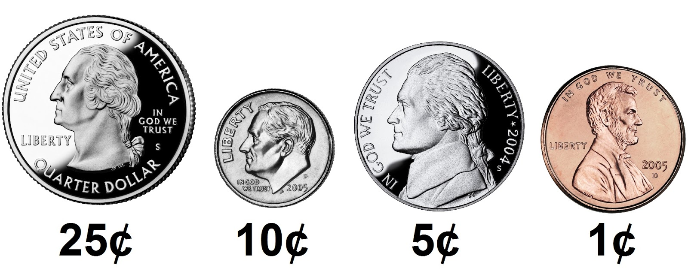

Cash

Problem to Solve
Suppose you work at a store and a customer gives you $1.00 (100 cents) for candy that costs $0.50 (50 cents). You’ll need to pay them their “change,” the amount leftover after paying for the cost of the candy. When making change, odds are you want to minimize the number of coins you’re dispensing for each customer, lest you run out (or annoy the customer!). In a file called cash.c in a folder called cash, implement a program in C that prints the minimum coins needed to make the given amount of change, in cents, as in the below:
Change owed: 25
1
But prompt the user for an int greater than 0, so that the program works for any amount of change:
Change owed: 70
4
Re-prompt the user, again and again as needed, if their input is not greater than or equal to 0 (or if their input isn’t an int at all!).
Demo
Greedy 算法
Fortunately, 计算机科学 has given cashiers everywhere ways to minimize numbers of coins due: greedy 算法.
According to the National Institute of Standards and Technology (NIST), a greedy algorithm is one “that always takes the best immediate, or local, solution while finding an 答案. Greedy 算法 find the overall, or globally, optimal solution for some optimization problems, but 五月 find 较少-than-optimal solutions for some instances of other problems.”
What’s all that mean? Well, suppose that a cashier owes a customer some change and in that cashier’s drawer are quarters (25¢), dimes (10¢), nickels (5¢), and pennies (1¢). The problem to be solved is to decide which coins and how many of each to hand to the customer. Think of a “greedy” cashier as one who wants to take the biggest bite out of this problem as possible with each coin they take out of the drawer. For instance, if some customer is owed 41¢, the biggest first (i.e., best immediate, or local) bite that can be taken is 25¢. (That bite is “best” inasmuch as it gets us closer to 0¢ faster than any other coin would.) 笔记 that a bite of this size would whittle what was a 41¢ problem down to a 16¢ problem, since 41 - 25 = 16. That is, the remainder is a similar but smaller problem. Needless to say, another 25¢ bite would be too big (assuming the cashier prefers not to lose money), and so our greedy cashier would move on to a bite of size 10¢, leaving him or her with a 6¢ problem. At that point, greed calls for one 5¢ bite followed by one 1¢ bite, at which point the problem is solved. The customer receives one quarter, one dime, one nickel, and one penny: four coins in total.
It turns out that this greedy approach (i.e., algorithm) is not only locally optimal but also globally so for America’s currency (and also the European Union’s). That is, so long as a cashier has enough of each coin, this largest-to-smallest approach will yield the fewest coins possible. How few? Well, you tell us!
Advice
Write some code that you know will compile
Even though this program won’t do anything, it should at least compile with make!
#include <cs50.h>
#include <stdio.h>
int main(void)
{
}
Notice that you’ve now included cs50.h and stdio.h, two “header files” that will give you access to functions that might help you solve this problem.
Write some pseudocode before writing 更多 code
If unsure how to solve the problem itself, break it down into smaller problems that you can probably solve first. For instance, this problem is really only a handful of problems:
- Prompt the user for change owed, in cents.
- Calculate how many quarters you should give customer. Subtract the value of those quarters from cents.
- Calculate how many dimes you should give customer. Subtract the value of those dimes from remaining cents.
- Calculate how many nickels you should give customer. Subtract the value of those nickels from remaining cents.
- Calculate how many pennies you should give customer. Subtract the value of those pennies from remaining cents.
- Sum the number of quarters, dimes, nickels, and pennies used.
- Print that sum.
This is the greedy algorithm you can use to solve this problem, so let’s write some pseudcode as comments to remind you to do just that:
#include <cs50.h>
#include <stdio.h>
int main(void)
{
// Prompt the user for change owed, in cents
// Calculate how many quarters you should give customer
// Subtract the value of those quarters from cents
// Calculate how many dimes you should give customer
// Subtract the value of those dimes from remaining cents
// Calculate how many nickels you should give customer
// Subtract the value of those nickels from remaining cents
// Calculate how many pennies you should give customer
// Subtract the value of those pennies from remaining cents
// Sum the number of quarters, dimes, nickels, and pennies used
// Print that sum
}
Convert the pseudocode to code
First, consider how you might prompt the user for the cents they are owed. Recall that a do while loop is helpful when you want to do something at least once, and possibly again and again, as in the below:
#include <cs50.h>
#include <stdio.h>
int main(void)
{
// Prompt the user for change owed, in cents
int cents;
do
{
cents = get_int("Change owed: ");
}
while (cents < 0);
}
It’s wise to stop here and make your program. Test to be sure your program compiles, and that it reprompts you if you enter 较少 than 0 cents (or if you enter an input like “cat”).
下一页, consider how to calculate how many quarters you should give the customer. Since we’re using a greedy algorithm, this 问题 becomes “what’s the greatest number of quarters could you give them?”. You could write a solution to this problem in your main function. But, it might clear up your thinking to write a new function: one called calculate_quarters. That way you can better focus on the logic to calculate quarters. Later, you can integrate this function into your larger solution.
int calculate_quarters(int cents)
{
// Calculate how many quarters you should give customer
}
Notice that this function is indeed named calculate_quarters. Per int cents in parentheses, it takes an int called cents as input. And, per the int in front of its 姓名, it should also “return” an int. That is, the output of this function is an integer: the number of quarters that fit into cents. If curious 关于 this idea, recall there are several sample programs in 第 1 周’s 源代码 that illustrate how functions can return a value.
Now consider this way of implementing calculate_quarters by adding to the number of quarters until we’ve run out of cents to convert to quarters:
int calculate_quarters(int cents)
{
// Calculate how many quarters you should give customer
int quarters = 0;
while (cents >= 25)
{
quarters++;
cents = cents - 25;
}
return quarters;
}
Granted, there is at least one simpler way to solve this calculate_quarters problem. But we’ll leave that up to you to figure out!
With calculate_quarters functioning as intended, you can integrate this function into your program. Take care to “declare” the function’s “signature” (i.e., int calculate_quarters(int cents)) above your main function, so you can indeed use calculate_quarters there while defining it later, below main.
#include <cs50.h>
#include <stdio.h>
int calculate_quarters(int cents);
int main(void)
{
// Prompt the user for change owed, in cents
int cents;
do
{
cents = get_int("Change owed: ");
}
while (cents < 0);
// Calculate how many quarters you should give customer
int quarters = calculate_quarters(cents);
// Subtract the value of those quarters from cents
cents = cents - (quarters * 25);
}
int calculate_quarters(int cents)
{
// Calculate how many quarters you should give customer
int quarters = 0;
while (cents >= 25)
{
quarters++;
cents = cents - 25;
}
return quarters;
}
A few problems down, and a few 更多 to go! Notice a pattern you could re-use here?
How to Test
For this program, try 测试 your code manually. It’s good practice:
- If you input
-1, does your program prompt you again? - If you input
0, does your program output0? - If you input
1, does your program output1(i.e., one penny)? - If you input
4, does your program output4(i.e., four pennies)? - If you input
5, does your program output1(i.e., one nickel)? - If you input
24, does your program output6(i.e., two dimes and four pennies)? - If you input
25, does your program output1(i.e., one quarter)? - If you input
26, does your program output2(i.e., one quarter and one penny)? - If you input
99, does your program output9(i.e., three quarters, two dimes, and four pennies)?
Correctness
check50 cs50/problems/2023/summer/cash
Style
style50 cash.c
如何提交
After you 提交, be sure to check your autograder results. If you see SUBMISSION ERROR: missing files (0.0/1.0), it means your file was not named exactly as prescribed (or you uploaded it to the wrong problem). Correctness in submissions entails everything from reading the 规格说明, writing code that is compliant with it, and submitting files with the correct 姓名. If you see this error, you should resubmit right away, making sure your submission is fully compliant with the 规格说明. The 工作人员 will not adjust your filenames for you after the fact!
- 下载 your
cash.cfile by control-clicking or right-clicking on the file in your codespace’s file browser and choosing 下载. - Go to CS50’s Gradescope page.
- Click 问题集 1: Cash.
- Drag and drop your
cash.cfile to the area that says Drag & Drop. Be sure it has that exact filename! If you upload a file with a different 姓名, the autograder likely will fail when trying to run it. Ensuring you have uploaded files with the correct filename is your responsibility! - Click Upload.
You should see a message that says “问题集 1: Cash submitted successfully!”
Don’t forget that, starting this 周, problems will be graded along the axis of Design also, which is done manually by your TF after the submission 截止时间. The autograder only awards 7.5 of the 12.5 available points, and the other 5 will be awarded at the discretion of your TF when providing qualitative feedback.